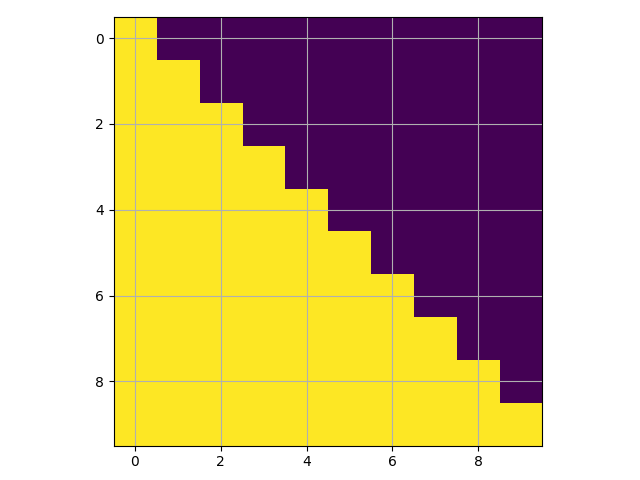

5.4 Transformer from Stratch
An annotated, line-by-line implementation of the Transformer model is detailed, covering its architecture, attention mechanisms, and a basic training example.
Created Date: 2025-06-29
The Transformer has been on a lot of people's minds over the past few years. This post presents an annotated version of the paper in the form of a line-by-line implementation. It reorders and deletes some sections from the original paper and adds comments throughout.
5.4.1 Background
The goal of reducing sequential computation also forms the foundation of the Extended Neural GPU, ByteNet and ConvS2S, all of which use convolutional neural networks as basic building block, computing hidden representations in parallel for all input and output positions. In these models, the number of operations required to relate signals from two arbitrary input or output positions grows in the distance between positions, linearly for ConvS2S and logarithmically for ByteNet. This makes it more difficult to learn dependencies between distant positions.
In the Transformer this is reduced to a constant number of operations, albeit at the cost of reduced effective resolution due to averaging attention-weighted positions, an effect we counteract with Multi-Head Attention.
Self-attention, sometimes called intra-attention is an attention mechanism relating different positions of a single sequence in order to compute a representation of the sequence. Self-attention has been used successfully in a variety of tasks including reading comprehension, abstractive summarization, textual entailment and learning task-independent sentence representations.
End-to-end memory networks are based on a recurrent attention mechanism instead of sequencealigned recurrence and have been shown to perform well on simple-language question answering and language modeling tasks.
To the best of our knowledge, however, the Transformer is the first transduction model relying entirely on self-attention to compute representations of its input and output without using sequence aligned RNNs or convolution.
5.4.2 Model Architecture
Most competitive neural sequence transduction models have an encoder-decoder structure. Here, the encoder maps an input sequence of symbol representations \((x_1, \cdots , x_n)\) to a sequence of continuous representations \(\mathbf{z} = (z_1, \cdots , z_n)\).
Given \(\mathbf{z}\), the decoder then generates an output sequence \((y_1, \cdots , y_m)\) of symbols one element at a time. At each step the model is auto-regressive, consuming the previously generated symbols as additional input when generating the next.
class EncoderDecoder(nn.Module):
"""
A standard Encoder-Decoder architecture. Base for this and many
other models.
"""
def __init__(self, encoder, decoder, src_embed, tgt_embed, generator):
super(EncoderDecoder, self).__init__()
self.encoder = encoder
self.decoder = decoder
self.src_embed = src_embed
self.tgt_embed = tgt_embed
self.generator = generator
def forward(self, src, tgt, src_mask, tgt_mask):
"""
Take in and process masked src and target sequences.
"""
return self.decode(self.encode(src, src_mask), src_mask, tgt, tgt_mask)
def encode(self, src, src_mask):
return self.encoder(self.src_embed(src), src_mask)
def decode(self, memory, src_mask, tgt, tgt_mask):
return self.decoder(self.tgt_embed(tgt), memory, src_mask, tgt_mask)The Transformer follows this overall architecture using stacked self-attention and point-wise, fully connected layers for both the encoder and decoder, shown in the left and right halves of Figure 1, respectively.

Figure 1 - The Transformer Architecture
The Generator takes the hidden states from the model, applies a linear layer to produce scores over the vocabulary, and uses log_softmax to get log-probabilities for word prediction or training.
class Generator(nn.Module):
"""
Define standard linear + softmax generation step.
"""
def __init__(self, d_model, vocab):
super(Generator, self).__init__()
self.proj = nn.Linear(d_model, vocab)
def forward(self, x):
return nn.functional.log_softmax(self.proj(x), dim=-1)5.4.3 Encoder and Decoder Stacks
Encoder and decoder stacks are composed of many identical layers stacked together.
5.4.3.1 Encoder
The encoder is composed of a stack of \(N = 6\) identical layers.
def clones(module, N):
"""
Produce N identical layers.
"""
return nn.ModuleList([copy.deepcopy(module) for _ in range(N)])
class Encoder(nn.Module):
"""
Core encoder is a stack of N layers
"""
def __init__(self, layer, N):
super(Encoder, self).__init__()
self.layers = clones(layer, N)
self.norm = LayerNorm(layer.size)
def forward(self, x, mask):
# Pass the input (and mask) through each layer in turn.
for layer in self.layers:
x = layer(x, mask)
return self.norm(x)We employ a residual connection around each of the two sub-layers, followed by layer normalization:
class LayerNorm(nn.Module):
"""
Construct a layernorm module (See citation for details).
"""
def __init__(self, features, eps=1e-6):
super(LayerNorm, self).__init__()
self.a_2 = nn.Parameter(torch.ones(features))
self.b_2 = nn.Parameter(torch.zeros(features))
self.eps = eps
def forward(self, x):
mean = x.mean(-1, keepdim=True)
std = x.std(-1, keepdim=True)
return self.a_2 * (x - mean) / (std + self.eps) + self.b_2That is, the output of each sub-layer is LayerNorm(x + SubLayer(x)), where SubLayer(x) is the function implemented by the sub-layer itself. We apply dropout to the output of each sub-layer, before it is added to the sub-layer input and normalized.
To facilitate these residual connections, all sub-layers in the model, as well as the embedding layers, produce outputs of dimension \(d_{model} = 512\).
class SublayerConnection(nn.Module):
"""
A residual connection followed by a layer norm.
Note for code simplicity the norm is first as opposed to last.
"""
def __init__(self, size, dropout):
super(SublayerConnection, self).__init__()
self.norm = LayerNorm(size)
self.dropout = nn.Dropout(dropout)
def forward(self, x, sublayer):
# Apply residual connection to any sublayer with the same size.
return x + self.dropout(sublayer(self.norm(x)))Each layer has two sub-layers. The first is a multi-head self-attention mechanism, and the second is a simple, position-wise fully connected feed-forward network.
class EncoderLayer(nn.Module):
"""
Encoder is made up of self-attn and feed forward (defined below)
"""
def __init__(self, size, self_attn, feed_forward, dropout):
super(EncoderLayer, self).__init__()
self.self_attn = self_attn
self.feed_forward = feed_forward
self.sublayer = clones(SublayerConnection(size, dropout), 2)
self.size = size
def forward(self, x, mask):
# Follow Figure 1 (left) for connections.
x = self.sublayer[0](x, lambda x: self.self_attn(x, x, x, mask))
return self.sublayer[1](x, self.feed_forward)5.4.3.2 Decoder
The decoder is also composed of a stack of \(N = 6\) identical layers.
class Decoder(nn.Module):
"""
Generic N layer decoder with masking.
"""
def __init__(self, layer, N):
super(Decoder, self).__init__()
self.layers = clones(layer, N)
self.norm = LayerNorm(layer.size)
def forward(self, x, memory, src_mask, tgt_mask):
for layer in self.layers:
x = layer(x, memory, src_mask, tgt_mask)
return self.norm(x)In addition to the two sub-layers in each encoder layer, the decoder inserts a third sub-layer, which performs multi-head attention over the output of the encoder stack. Similar to the encoder, we employ residual connections around each of the sub-layers, followed by layer normalization.
class DecoderLayer(nn.Module):
"""
Decoder is made of self-attn, src-attn, and feed forward (defined below)
"""
def __init__(self, size, self_attn, src_attn, feed_forward, dropout):
super(DecoderLayer, self).__init__()
self.size = size
self.self_attn = self_attn
self.src_attn = src_attn
self.feed_forward = feed_forward
self.sublayer = clones(SublayerConnection(size, dropout), 3)
def forward(self, x, memory, src_mask, tgt_mask):
x = self.sublayer[0](x, lambda x: self.self_attn(x, x, x, tgt_mask))
x = self.sublayer[1](x, lambda x: self.src_attn(x, memory, memory, src_mask))
return self.sublayer[2](x, self.feed_forward)We also modify the self-attention sub-layer in the decoder stack to prevent positions from attending to subsequent positions. This masking, combined with fact that the output embeddings are offset by one position, ensures that the predictions for position \(i\) can depend only on the known outputs at positions less than \(i\).
def subsequent_mask(size):
"""
Mask out subsequent positions.
"""
attn_shape = (1, size, size)
subsequent_mask = torch.triu(torch.ones(attn_shape), diagonal=1).type(torch.uint8)
return subsequent_mask == 0Below the attention mask shows the position each tgt word (row) is allowed to look at (column). Words are blocked for attending to future words during training.
mask_example = subsequent_mask(10)[0]
pyplot.imshow(mask_example)
pyplot.grid(True)
pyplot.show()
Figure 2 - Mask Example
5.4.3.3 Attention
An attention function can be described as mapping a query and a set of key-value pairs to an output, where the query, keys, values, and output are all vectors. The output is computed as a weighted sum of the values, where the weight assigned to each value is computed by a compatibility function of the query with the corresponding key.
We call our particular attention “Scaled Dot-Product Attention”. The input consists of queries and keys of dimension \(d_k\) , and values of dimension \(d_v\) . We compute the dot products of the query with all keys, divide each by \(\sqrt{d_k}\) , and apply a softmax function to obtain the weights on the values.

Figure 3 - Scaled Dot-Product Attention
In practice, we compute the attention function on a set of queries simultaneously, packed together into a matrix \(Q\) , The keys and values are also packed together into matrices \(K\) and \(V\) . We compute the matrix of outputs as:
def attention(query, key, value, mask=None, dropout=None):
'''
Compute 'Scaled Dot Product Attention'
'''
d_k = query.size(-1)
scores = torch.matmul(query, key.transpose(-2, -1)) / math.sqrt(d_k)
if mask is not None:
scores = scores.masked_fill(mask == 0, -1e9)
p_attn = scores.softmax(dim=-1)
if dropout is not None:
p_attn = dropout(p_attn)
return torch.matmul(p_attn, value), p_attnThe two most commonly used attention functions are additive attention, and dot-product (multiplicative) attention. Dot-product attention is identical to our algorithm, except for the scaling factor of \(\frac{1}{\sqrt{d_k}}\). Additive attention computes the compatibility function using a feed-forward network with a single hidden layer. While the two are similar in theoretical complexity, dot-product attention is much faster and more space-efficient in practice, since it can be implemented using highly optimized matrix multiplication code.
While for small values of \(d_k\) the two mechanisms perform similarly, additive attention outperforms dot product attention without scaling for larger values of \(d_k\) . We suspect that for large values of \(d_k\) , the dot products grow large in magnitude, pushing the softmax function into regions where it has extremely small gradients (To illustrate why the dot products get large, assume that the components of \(q\) and \(k\) are independent random variables with mean 0 and variance 1. Then their dot product \(q \cdot k = \sum_{i=1}^{d_k} q_i k_i\) , has mean 0 and variance \(d_k\) . To counteract this effect, we scale the dot products by \(frac{1}{\sqrt{d_k}}\) .

Figure 4 - Multi-Head Attention
Multi-head attention allows the model to jointly attend to information from different representation subspaces at different positions. With a single attention head, averaging inhibits this.
Where the projections are parameter matrices \(W_i^Q \in \mathbb{R}^{d_{model} \times d_k}\), \(W_i^K \in \mathbb{R}^{d_{model} \times d_k}\), \(W_i^V \in \mathbb{R}^{d_{model} \times d_v}\) and \(W^O \in \mathbb{R}^{h d_v \times d_{model}}\).
In this work we employ \(h = 8\) parallel attention layers, or heads. For each of these we use \(d_k = d_v = d_{model}/h = 64\). Due to the reduced dimension of each head, the total computational cost is similar to that of single-head attention with full dimensionality.
class MultiHeadedAttention(nn.Module):
def __init__(self, h, d_model, dropout=0.1):
"""
Take in model size and number of heads.
"""
super(MultiHeadedAttention, self).__init__()
assert d_model % h == 0
# We assume d_v always equals d_k
self.d_k = d_model // h
self.h = h
self.linears = clones(nn.Linear(d_model, d_model), 4)
self.attn = None
self.dropout = nn.Dropout(p=dropout)
def forward(self, query, key, value, mask=None):
if mask is not None:
mask = mask.unsqueeze(1)
nbatches = query.size(0)
# 1) Do all the linear projections in batch from d_model => h x d_k
query, key, value = [
lin(x).view(nbatches, -1, self.h, self.d_k).transpose(1, 2)
for lin, x in zip(self.linears, (query, key, value))
]
# 2) Apply attention on all the projected vectors in batch.
x, self.attn = attention(
query, key, value, mask=mask, dropout=self.dropout
)
# 3) "Concat" using a view and apply a final linear.
x = (
x.transpose(1, 2)
.contiguous()
.view(nbatches, -1, self.h * self.d_k)
)
del query
del key
del value
return self.linears[-1](x)5.4.3.4 The Computation Process
The multi-head attention mechanism is computed in a staged process, involving the weight matrices we discussed earlier. Let's break it down step by step:
1. Independently Compute Q, K, V for Each Attention Head
For each attention head \(i\) (from 1 to h\), we perform linear transformations on the input queries (\(Q_{input}\)), keys (\(K_{input}\)), and values (\(V_{inputs}\)). These inputs are typically representations from the previous layer (e.g., the encoder's output or a previous layer's output in the decoder).
Here, \(Q_{input}\) is the input query matrix, typically with dimensions \(N \times d_{model}\) (\(N\) is the sequence length , \(d_{model}\) is the model's dimension).
\(W_i^Q\) is the query weight matrix for the i-th attention head, with dimensions \(d_{model} \times d_k\) , the resulting \(Q_i\) has dimensions \(N \times d_k\) .
\(K_{input}\) is the input key matrix, typically with dimensions \(M \times d_{model}\) (\(M\) is another sequence length, or the same as \(N\)).
\(W_i^K\) is the key weight matrix for the i-th attention head, with dimensions \(d_{model} \times d_k\) , the resulting \(K_i\) has dimensions \(M \times d_k\) .
\(v_{input}\) is the input value matrix, typically with dimensions \(M \times d_{model}\) .
\(W_i^V\) is the value weight matrix for the i-th attention head, with dimensions \(d_{model} \times d_v\) , the resulting \(V_i\) has dimensions \(M \times d_v\)
2. Compute Scaled Dot-Product Attention
For each attention head \(i\), we use \(Q_i\) , \(K_i\) , and \(V_i\) to compute the attention output. This is the core of "attention" in the Transformer:
Calculate Attention Scores: First, compute the dot product between the queries and keys to measure their similarity, \(Score_i = Q_i K_i^T, Score_i \in \mathbb{R}^{N \times M}\).
Scale: To prevent the dot product results from becoming too large, which can cause the Softmax function to fall into saturation regions (very small gradients) during gradient descent, we scale the scores, \(ScaledScore_i = \frac{Score_i}{\sqrt{d_k}}\).
Apply Softmax: Convert the scaled scores into a probability distribution using the Softmax function, ensuring all weights sum to 1, \(AttentionWeight_i = Softmax(ScaledScore_i)\).
Weighted Sum of Values: Perform a weighted sum of the values \(V_i\) using the attention weights to get the output of the current attention head, \({Head}_i = AttentionWeight_i \cdot V_i, Head_i \in \mathbb{R}^{N \times d_v}\).
3. Concatenate Outputs from All Attention Heads
Once all \(h\) attention heads have computed their respective outputs \((Head_1, Head_2, ..., Head_h)\), we concatenate them along the feature dimension:
4. Final Linear Transformation
Finally, the concatenated result is passed through a final linear transformation (performed by the \(W^o\) matrix), which projects the dimension from \(h \cdot d_v\) back to the model's original dimension \(d_{model}\) :
\(W^O\) has dimensions \((h \cdot d_v) \times d_{model}\), the final \(Output\) has dimensions \(N \times d_{model}\) .
5.4.3.5 Applications of Attention in our Model
The Transformer uses multi-head attention in three different ways:
In "encoder-decoder attention" layers, the queries come from the previous decoder layer, and the memory keys and values come from the output of the encoder. This allows every position in the decoder to attend over all positions in the input sequence. This mimics the typical encoder-decoder attention mechanisms in sequence-to-sequence models.
The encoder contains self-attention layers. In a self-attention layer all of the keys, values and queries come from the same place, in this case, the output of the previous layer in the encoder. Each position in the encoder can attend to all positions in the previous layer of the encoder.
Similarly, self-attention layers in the decoder allow each position in the decoder to attend to all positions in the decoder up to and including that position. We need to prevent leftward information flow in the decoder to preserve the auto-regressive property. We implement this inside of scaled dot-product attention by masking out (setting to \(-\infty\)) all values in the input of the softmax which correspond to illegal connections. See Figure 2.
5.4.4 Position-wise Feed-Forward Networks
In addition to attention sub-layers, each of the layers in our encoder and decoder contains a fully connected feed-forward network, which is applied to each position separately and identically. This consists of two linear transformations with a ReLU activation in between.
While the linear transformations are the same across different positions, they use different parameters from layer to layer. Another way of describing this is as two convolutions with kernel size 1. The dimensionality of input and output is \(d_{model} = 512\), and the inner-layer has dimensionality \(d_{ff} = 2048\).
class PositionwiseFeedForward(nn.Module):
"""
Implements FFN equation.
"""
def __init__(self, d_model, d_ff, dropout=0.1):
super(PositionwiseFeedForward, self).__init__()
self.w_1 = nn.Linear(d_model, d_ff)
self.w_2 = nn.Linear(d_ff, d_model)
self.dropout = nn.Dropout(dropout)
def forward(self, x):
return self.w_2(self.dropout(self.w_1(x).relu()))5.4.5 Embeddings and Softmax
Similarly to other sequence transduction models, we use learned embeddings to convert the input tokens and output tokens to vectors of dimension \(d_{model}\). We also use the usual learned linear transformation and softmax function to convert the decoder output to predicted next-token probabilities. In our model, we share the same weight matrix between the two embedding layers and the pre-softmax linear transformation, similar to (cite). In the embedding layers, we multiply those weights by \(\sqrt{d_{model}}\).
class Embeddings(nn.Module):
def __init__(self, d_model, vocab):
super(Embeddings, self).__init__()
self.lut = nn.Embedding(vocab, d_model)
self.d_model = d_model
def forward(self, x):
return self.lut(x) * math.sqrt(self.d_model)5.4.6 Positional Encoding
Since our model contains no recurrence and no convolution, in order for the model to make use of the order of the sequence, we must inject some information about the relative or absolute position of the tokens in the sequence. To this end, we add "positional encodings" to the input embeddings at the bottoms of the encoder and decoder stacks. The positional encodings have the same dimension \(d_{model}\) as the embeddings, so that the two can be summed. There are many choices of positional encodings, learned and fixed.
In this work, we use sine and cosine functions of different frequencies:
where \(pos\) is the position and \(i\) is the dimension. That is, each dimension of the positional encoding corresponds to a sinusoid. The wavelengths form a geometric progression from \(2\pi\) to \(10000 \cdot 2\pi\). We chose this function because we hypothesized it would allow the model to easily learn to attend by relative positions, since for any fixed offset \(k\), \({PE}_{pos+k}\) can be represented as a linear function of \({PE}_{pos}\).
In addition, we apply dropout to the sums of the embeddings and the positional encodings in both the encoder and decoder stacks. For the base model, we use a rate of \(P_{drop} = 0.1\) .
class PositionalEncoding(nn.Module):
"""
Implement the PE function.
"""
def __init__(self, d_model, dropout, max_len=5000):
super(PositionalEncoding, self).__init__()
self.dropout = nn.Dropout(p=dropout)
# Compute the positional encodings once in log space.
pe = torch.zeros(max_len, d_model)
position = torch.arange(0, max_len).unsqueeze(1)
div_term = torch.exp(
torch.arange(0, d_model, 2) * -(math.log(10000.0) / d_model)
)
pe[:, 0::2] = torch.sin(position * div_term)
pe[:, 1::2] = torch.cos(position * div_term)
pe = pe.unsqueeze(0)
self.register_buffer('pe', pe)
def forward(self, x):
x = x + self.pe[:, : x.size(1)].requires_grad_(False)
return self.dropout(x)The PyTorch code div_term = torch.exp(torch.arange(0, d_model, 2).float() * (-math.log(10000.0) / d_model)) is a direct implementation of the \(10000**(-2i/d_model)\) term from the Transformer's positional encoding formula. The div_term array is a sequence of values that determines the oscillation frequencies of the sine and cosine waves.
The term \(10000^{-2i/d_{model}}\) is equal to \({(e^{ln 10000})}^{-2i/d_{model}}\), this simplifies to \(e^{ln 10000 \cdot (-2i/d_{model})}\).
We also experimented with using learned positional embeddings instead, and found that the two versions produced nearly identical results. We chose the sinusoidal version because it may allow the model to extrapolate to sequence lengths longer than the ones encountered during training.
5.4.7 Full Model
Here we define a function from hyperparameters to a full model.
def make_model(src_vocab, tgt_vocab, N=6, d_model=512, d_ff=2048, h=8, dropout=0.1):
# Helper: Construct a model from hyperparameters.
c = copy.deepcopy
attn = MultiHeadedAttention(h, d_model)
ff = PositionwiseFeedForward(d_model, d_ff, dropout)
position = PositionalEncoding(d_model, dropout)
model = EncoderDecoder(
Encoder(EncoderLayer(d_model, c(attn), c(ff), dropout), N),
Decoder(DecoderLayer(d_model, c(attn), c(attn), c(ff), dropout), N),
nn.Sequential(Embeddings(d_model, src_vocab), c(position)),
nn.Sequential(Embeddings(d_model, tgt_vocab), c(position)),
Generator(d_model, tgt_vocab),
)
# This was important from their code.
# Initialize parameters with Glorot / fan_avg.
for p in model.parameters():
if p.dim() > 1:
nn.init.xavier_uniform_(p)
return model5.4.8 Inference
Here we make a forward step to generate a prediction of the model. We try to use our transformer to memorize the input. As you will see the output is randomly generated due to the fact that the model is not trained yet. In the next tutorial we will build the training function and try to train our model to memorize the numbers from 1 to 10.
def inference_test():
test_model = make_model(11, 11, 2)
test_model.eval()
src = torch.LongTensor([[1, 2, 3, 4, 5, 6, 7, 8, 9, 10]])
src_mask = torch.ones(1, 1, 10)
memory = test_model.encode(src, src_mask)
ys = torch.zeros(1, 1).type_as(src)
for _ in range(9):
out = test_model.decode(
memory, src_mask, ys, subsequent_mask(ys.size(1)).type_as(src.data))
prob = test_model.generator(out[:, -1])
_, next_word = torch.max(prob, dim=1)
next_word = next_word.data[0]
ys = torch.cat(
[ys, torch.empty(1, 1).type_as(src.data).fill_(next_word)], dim=1
)
print("Untrained Prediction:", ys)
for _ in range(5):
inference_test()Untrained Prediction: tensor([[0, 6, 4, 4, 4, 4, 4, 4, 4, 4]]) Untrained Prediction: tensor([[0, 4, 4, 4, 4, 4, 4, 4, 4, 4]]) Untrained Prediction: tensor([[0, 8, 0, 8, 0, 8, 0, 8, 0, 8]]) Untrained Prediction: tensor([[0, 4, 5, 5, 5, 5, 5, 5, 5, 5]]) Untrained Prediction: tensor([[0, 7, 4, 7, 2, 2, 2, 2, 2, 2]])
5.4.9 Training
This section describes the training regime for our models.
Batches and Masking
We stop for a quick interlude to introduce some of the tools needed to train a standard encoder decoder model. First we define a batch object that holds the src and target sentences for training, as well as constructing the masks.
class Batch:
"""
Object for holding a batch of data with mask during training.
"""
def __init__(self, src, tgt=None, pad=2): # 2 =
self.src = src
self.src_mask = (src != pad).unsqueeze(-2)
if tgt is not None:
self.tgt = tgt[:, :-1]
self.tgt_y = tgt[:, 1:]
self.tgt_mask = self.make_std_mask(self.tgt, pad)
self.ntokens = (self.tgt_y != pad).data.sum()
@staticmethod
def make_std_mask(tgt, pad):
# Create a mask to hide padding and future words.
tgt_mask = (tgt != pad).unsqueeze(-2)
tgt_mask = tgt_mask & subsequent_mask(tgt.size(-1)).type_as(
tgt_mask.data
)
return tgt_mask Training Loop
Next we create a generic training and scoring function to keep track of loss. We pass in a generic loss compute function that also handles parameter updates.
# Training loop
class TrainState:
"""
Track number of steps, examples, and tokens processed
"""
step: int = 0 # Steps in the current epoch
accum_step: int = 0 # Number of gradient accumulation steps
samples: int = 0 # total # of examples used
tokens: int = 0 # total # of tokens processed
def run_epoch(data_iter, model, loss_compute,
optimizer,
scheduler,
mode='train',
accum_iter=1,
train_state=TrainState):
"""
Train a single epoch.
"""
start = time.time()
total_tokens = 0
total_loss = 0
tokens = 0
n_accum = 0
for i, batch in enumerate(data_iter):
out = model.forward(
batch.src, batch.tgt, batch.src_mask, batch.tgt_mask
)
loss, loss_node = loss_compute(out, batch.tgt_y, batch.ntokens)
# loss_node = loss_node / accum_iter
if mode == "train" or mode == "train+log":
loss_node.backward()
train_state.step += 1
train_state.samples += batch.src.shape[0]
train_state.tokens += batch.ntokens
if i % accum_iter == 0:
optimizer.step()
optimizer.zero_grad(set_to_none=True)
n_accum += 1
train_state.accum_step += 1
scheduler.step()
total_loss += loss
total_tokens += batch.ntokens
tokens += batch.ntokens
if i % 40 == 1 and (mode == "train" or mode == "train+log"):
lr = optimizer.param_groups[0]["lr"]
elapsed = time.time() - start
print(
(
"Epoch Step: %6d | Accumulation Step: %3d | Loss: %6.2f "
+ "| Tokens / Sec: %7.1f | Learning Rate: %6.1e"
)
% (i, n_accum, loss / batch.ntokens, tokens / elapsed, lr)
)
start = time.time()
tokens = 0
del loss
del loss_node
return total_loss / total_tokens, train_stateTraining Data and Batching
We trained on the standard WMT 2014 English-German dataset consisting of about 4.5 million sentence pairs. Sentences were encoded using byte-pair encoding, which has a shared source-target vocabulary of about 37000 tokens. For English-French, we used the significantly larger WMT 2014 English-French dataset consisting of 36M sentences and split tokens into a 32000 word-piece vocabulary.
Sentence pairs were batched together by approximate sequence length. Each training batch contained a set of sentence pairs containing approximately 25000 source tokens and 25000 target tokens.
Hardware and Schedule
We trained our models on one machine with 8 NVIDIA P100 GPUs. For our base models using the hyperparameters described throughout the paper, each training step took about 0.4 seconds. We trained the base models for a total of 100,000 steps or 12 hours. For our big models, step time was 1.0 seconds. The big models were trained for 300,000 steps (3.5 days).
Optimizer
We used the Adam optimizer with \(\beta_1 = 0.9\), \(\beta_2 = 0.98\), and \(\epsilon = 10^{-9}\). We varied the learning rate over the course of training, according to the formula:
This corresponds to increasing the learning rate linearly for the first \(warmup\_steps\) training steps, and decreasing it thereafter proportionally to the inverse square root of the step number. We used \(warmup\_steps = 4000\).
def rate(step, model_size, factor, warmup):
"""
we have to default the step to 1 for LambdaLR function
to avoid zero raising to negative power.
"""
if step == 0:
step = 1
return factor * (
model_size ** (-0.5) * min(step ** (-0.5), step * warmup ** (-1.5))
)Regularization
During training, we employed label smoothing of value \(\epsilon_{ls} = 0.1\). This hurts perplexity, as the model learns to be more unsure, but improves accuracy and BLEU score.
We implement label smoothing using the KL div loss. Instead of using a one-hot target distribution, we create a distribution that has confidence of the correct word and the rest of the smoothing mass distributed throughout the vocabulary.
class LabelSmoothing(nn.Module):
"""
Implement label smoothing.
"""
def __init__(self, size, padding_idx, smoothing=0.0):
super(LabelSmoothing, self).__init__()
self.criterion = nn.KLDivLoss(reduction="sum")
self.padding_idx = padding_idx
self.confidence = 1.0 - smoothing
self.smoothing = smoothing
self.size = size
self.true_dist = None
def forward(self, x, target):
assert x.size(1) == self.size
true_dist = x.data.clone()
true_dist.fill_(self.smoothing / (self.size - 2))
true_dist.scatter_(1, target.data.unsqueeze(1), self.confidence)
true_dist[:, self.padding_idx] = 0
mask = torch.nonzero(target.data == self.padding_idx)
if mask.dim() > 0:
true_dist.index_fill_(0, mask.squeeze(), 0.0)
self.true_dist = true_dist
return self.criterion(x, true_dist.clone().detach())5.4.10 Example
We can begin by trying out a simple copy-task. Given a random set of input symbols from a small vocabulary, the goal is to generate back those same symbols.
# The data_gen function generates an input and target that are identical.
def data_gen(V, batch_size, nbatches):
"""
Generate random data for a src-tgt copy task.
"""
for i in range(nbatches):
data = torch.randint(1, V, size=(batch_size, 10))
data[:, 0] = 1
src = data.requires_grad_(False).clone().detach()
tgt = data.requires_grad_(False).clone().detach()
yield Batch(src, tgt, 0)
class SimpleLossCompute:
"""
A simple loss compute and train function.
"""
def __init__(self, generator, criterion):
self.generator = generator
self.criterion = criterion
def __call__(self, x, y, norm):
x = self.generator(x)
sloss = (
self.criterion(
x.contiguous().view(-1, x.size(-1)), y.contiguous().view(-1)
)
/ norm
)
return sloss.data * norm, sloss
class DummyOptimizer(torch.optim.Optimizer):
def __init__(self):
self.param_groups = [{"lr": 0}]
None
def step(self):
None
def zero_grad(self, set_to_none=False):
None
class DummyScheduler:
def step(self):
None
def greedy_decode(model, src, src_mask, max_len, start_symbol):
memory = model.encode(src, src_mask)
ys = torch.zeros(1, 1).fill_(start_symbol).type_as(src.data)
for i in range(max_len - 1):
out = model.decode(
memory, src_mask, ys, subsequent_mask(ys.size(1)).type_as(src.data)
)
prob = model.generator(out[:, -1])
_, next_word = torch.max(prob, dim=1)
next_word = next_word.data[0]
ys = torch.cat(
[ys, torch.zeros(1, 1).type_as(src.data).fill_(next_word)], dim=1
)
return ys
def example_simple_model():
V = 11
criterion = LabelSmoothing(size=V, padding_idx=0, smoothing=0.0)
model = make_model(V, V, N=2)
optimizer = torch.optim.Adam(
model.parameters(), lr=0.5, betas=(0.9, 0.98), eps=1e-9
)
lr_scheduler = torch.optim.lr_scheduler.LambdaLR(
optimizer=optimizer,
lr_lambda=lambda step: rate(
step, model_size=model.src_embed[0].d_model, factor=1.0, warmup=400
),
)
batch_size = 80
for epoch in range(20):
model.train()
run_epoch(data_gen(V, batch_size, 20),
model,
SimpleLossCompute(model.generator, criterion),
optimizer,
lr_scheduler,
mode='train')
model.eval()
run_epoch(
data_gen(V, batch_size, 5),
model,
SimpleLossCompute(model.generator, criterion),
DummyOptimizer(),
DummyScheduler(),
mode="eval",
)
model.eval()
src = torch.LongTensor([[0, 1, 2, 3, 4, 5, 6, 7, 8, 9]])
max_len = src.shape[1]
src_mask = torch.ones(1, 1, max_len)
print(greedy_decode(model, src, src_mask, max_len=max_len, start_symbol=0))
example_simple_model()Epoch Step: 1 | Accumulation Step: 2 | Loss: 3.03 | Tokens / Sec: 541.6 | Learning Rate: 5.5e-06 Epoch Step: 1 | Accumulation Step: 2 | Loss: 2.03 | Tokens / Sec: 1550.9 | Learning Rate: 6.1e-05 Epoch Step: 1 | Accumulation Step: 2 | Loss: 1.73 | Tokens / Sec: 1639.5 | Learning Rate: 1.2e-04 Epoch Step: 1 | Accumulation Step: 2 | Loss: 1.45 | Tokens / Sec: 1836.4 | Learning Rate: 1.7e-04 Epoch Step: 1 | Accumulation Step: 2 | Loss: 1.07 | Tokens / Sec: 1804.4 | Learning Rate: 2.3e-04 Epoch Step: 1 | Accumulation Step: 2 | Loss: 0.63 | Tokens / Sec: 1590.8 | Learning Rate: 2.8e-04 Epoch Step: 1 | Accumulation Step: 2 | Loss: 0.38 | Tokens / Sec: 1608.8 | Learning Rate: 3.4e-04 Epoch Step: 1 | Accumulation Step: 2 | Loss: 0.18 | Tokens / Sec: 1416.6 | Learning Rate: 3.9e-04 Epoch Step: 1 | Accumulation Step: 2 | Loss: 0.19 | Tokens / Sec: 1487.9 | Learning Rate: 4.5e-04 Epoch Step: 1 | Accumulation Step: 2 | Loss: 0.15 | Tokens / Sec: 1547.1 | Learning Rate: 5.0e-04 Epoch Step: 1 | Accumulation Step: 2 | Loss: 0.12 | Tokens / Sec: 1725.5 | Learning Rate: 5.6e-04 Epoch Step: 1 | Accumulation Step: 2 | Loss: 0.11 | Tokens / Sec: 1381.7 | Learning Rate: 6.1e-04 Epoch Step: 1 | Accumulation Step: 2 | Loss: 0.12 | Tokens / Sec: 2106.1 | Learning Rate: 6.7e-04 Epoch Step: 1 | Accumulation Step: 2 | Loss: 0.14 | Tokens / Sec: 2284.4 | Learning Rate: 7.2e-04 Epoch Step: 1 | Accumulation Step: 2 | Loss: 0.08 | Tokens / Sec: 2015.4 | Learning Rate: 7.8e-04 Epoch Step: 1 | Accumulation Step: 2 | Loss: 0.13 | Tokens / Sec: 2388.6 | Learning Rate: 8.3e-04 Epoch Step: 1 | Accumulation Step: 2 | Loss: 0.12 | Tokens / Sec: 2272.0 | Learning Rate: 8.9e-04 Epoch Step: 1 | Accumulation Step: 2 | Loss: 0.08 | Tokens / Sec: 1886.4 | Learning Rate: 9.4e-04 Epoch Step: 1 | Accumulation Step: 2 | Loss: 0.16 | Tokens / Sec: 1581.0 | Learning Rate: 1.0e-03 Epoch Step: 1 | Accumulation Step: 2 | Loss: 0.08 | Tokens / Sec: 1497.5 | Learning Rate: 1.1e-03 tensor([[0, 1, 2, 3, 4, 5, 6, 7, 8, 9]])